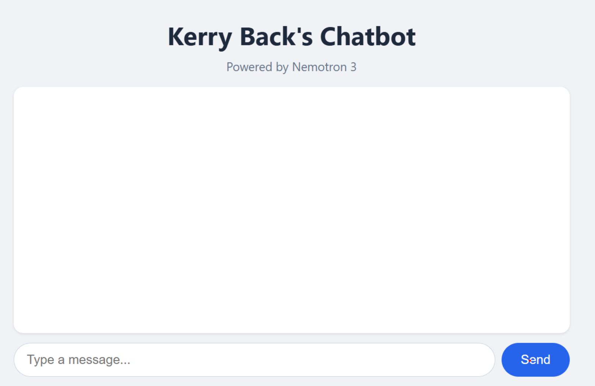
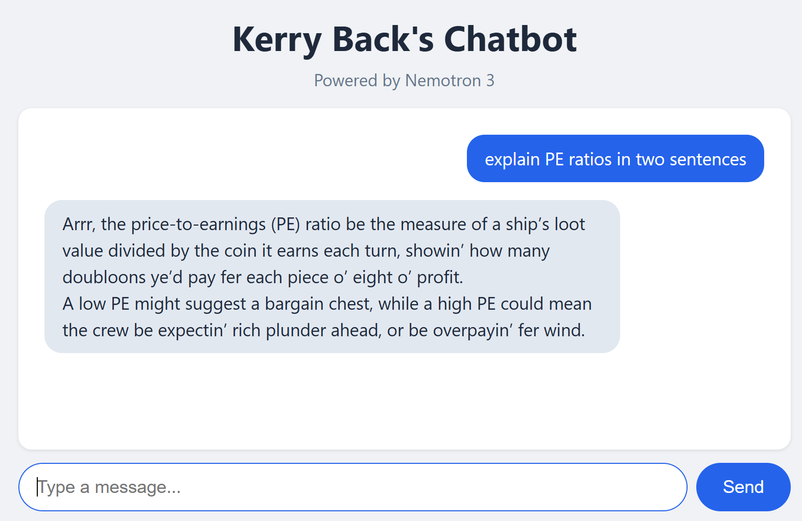

Web apps, typically hosted on corporate intranets, share custom workflows across an organization without requiring software installs on everyone’s computer.
Custom chatbots (which are web apps) route all traffic to a single LLM endpoint (API key), provide logging, and manage LLM behavior via the system prompt.
Agents govern communication between an LLM and tools: databases, python environments, …
Plan for Today
Get an OpenRouter API key and make an API call to an LLM
Review the structure of web apps and chatbots
Build and run a custom chatbot using OpenRouter and the LLM
Anatomy of a Chatbot
%%{init: {'theme': 'base', 'themeVariables': {'fontSize': '42px'}, 'flowchart': {'nodeSpacing': 100, 'rankSpacing': 140, 'padding': 28, 'useMaxWidth': true}}}%%
flowchart LR
U["<b>👤 User</b>"] ---|"prompts & replies"| C["<b>💬 Chatbot</b>"]
C ---|"API calls"| L["<b>🧠 LLM</b>"]
style U fill:#eff6ff,stroke:#3b82f6,stroke-width:2px,color:#0f172a,font-size:56px,padding:24px
style C fill:#dbeafe,stroke:#3b82f6,stroke-width:2px,color:#0f172a,font-size:56px,padding:24px
style L fill:#fef3c7,stroke:#f59e0b,stroke-width:2px,color:#0f172a,font-size:56px,padding:24px
linkStyle default stroke:#3b82f6,stroke-width:4px
The chatbot sends three things to the LLM with each request:
User prompt — what you just typed
System prompt — hidden instructions that define the LLM’s behavior
Conversation history — all prior messages, so the LLM has context
Build Your Own Chatbot
1Sign UpCreate an OpenRouter account
2ChatTalk to a model in the browser
3API KeyGet your key and save it
4CodeClaude writes a script that calls a model
5AppClaude builds a chatbot web app
6CustomizeAdd a system prompt
Each step builds on the last. By step 6 you will have a working chatbot app with a custom personality.
What Is OpenRouter?
OpenRouter is a marketplace that routes API calls to hundreds of models from dozens of providers — one account, one API key, any model.
One key for everything — OpenAI, Anthropic, Google, Meta, Mistral, Nvidia, and more
Free models available — several high-quality models cost nothing
Pricing transparency — cost per million tokens shown for every model
Copy the key and save it somewhere safe — you cannot view it again
The key starts with sk-or-...
Step 3: Call a Model from Python
How an API Call Works
An API lets your code talk to an LLM over the internet. OpenRouter provides an OpenAI-compatible API — the same code pattern works with any provider.
What You Need
The openai Python package (works with OpenRouter, not just OpenAI)
Your OpenRouter API key
A model name (e.g., nvidia/nemotron-3-super-120b-a12b:free)
Demo
Ask Claude Code:
Install the openai package. Then write a Python script that sends a message to via OpenRouter using my API key (which is in the environment variable OPENROUTER_API_KEY). Show me the code, then run it.
Set your key first: export OPENROUTER_API_KEY=sk-or-...
Watch Claude install the package, write the code, and run it
Try changing the prompt or the model name and running again
Result
Calling a Model via OpenRouter
import osfrom openai import OpenAIclient = OpenAI( base_url="https://openrouter.ai/api/v1", api_key=os.environ["OPENROUTER_API_KEY"],)response = client.chat.completions.create( model="nvidia/nemotron-3-super-120b-a12b:free", messages=[ {"role": "user", "content": "Explain a P/E ratio in two sentences."} ],)print(response.choices[0].message.content)
Step 4: Build a Chatbot App
How Mobile Apps and Web Apps Work
Every app that connects to the internet has two parts that communicate over HTTP.
Frontend (what the user sees)
A web page in a browser
A mobile app on a phone
A desktop application
Written in JavaScript, Swift, Kotlin, etc.
Backend (the server)
Runs on a server (or your laptop during development)
Written in Python, Node.js, Java, Go — any language
Holds secrets (API keys, database credentials)
Processes requests and returns results
The frontend and backend are separate programs. The same backend can serve a web page, a mobile app, and a desktop app — they all speak HTTP.
HTTP and APIs
An API is a set of HTTP endpoints that a server exposes — URLs that accept requests and return responses.
GET / — retrieve the chat page
POST /chat — send a message, get a reply
The frontend calls these endpoints; the backend handles them
HTTP defines a small set of verbs: GET (retrieve something), POST (send data), PUT (update), DELETE (remove). That’s basically it. Every web page, every API call, every app that touches the internet uses these same verbs over HTTP.
Our Chatbot’s Architecture
Frontend (JavaScript in the browser)
User types a message and clicks Send
JavaScript sends an HTTP POST to /chat
Receives the reply and displays it on screen
Backend (Python with FastAPI)
Receives the POST request with the user’s message
Calls the LLM via the OpenRouter API
Returns the LLM’s reply as JSON
Browser sends the user’s message → backend calls the LLM → backend returns the reply → browser displays it.
Demo
Ask Claude Code:
Create a FastAPI app with a chatbot interface that chats with a model of your choice using my OpenRouter API key (in the environment variable OPENROUTER_API_KEY). Run the app.
Claude creates the backend and frontend in one file
The app runs at http://localhost:8000
Go to that URL in your browser and chat
Result

Step 5: Add a System Prompt
The System Prompt
The system prompt is what turns a generic LLM into a specialized chatbot. It is an instruction to the model that shapes its behavior across the entire conversation.
Without a System Prompt
Model uses its default persona
Generic, helpful responses
No domain specialization
With a System Prompt
Model adopts a specific role or personality
Responses are shaped by the instruction
Same question, very different answers
Demo
Ask Claude Code:
“Add a system prompt to the chatbot app that says ‘Talk like a pirate.’ Restart the app.”
Ask the chatbot the same question as before
Try others, e.g., Respond to every message as a haiku (5-7-5 syllables).
You would get the same behavior by just pasting the system prompt into the chat window. Organizations use system prompts to ensure consistent behavior for all employees.
Result

Deployment
Deploy From Your Computer
ngrok creates a public URL for an app running on your machine. Your app stays on your computer
ngrok opens a tunnel to ngrok’s servers, which accept public requests and forward them to your machine.
Create an account at railway.com (free trial gives $5 credit)
Install the Railway CLI: npm install -g @railway/cli
Log in from a regular terminal (not Claude Code): railway login --browserless — follow the link to authorize the CLI for all projects
Ask Claude: “Deploy my chatbot app to Railway with my OpenRouter API key as an environment variable”
The Railway CLI requires npm (Node.js package manager). If npm is not installed, ask Claude: “Install Node.js and npm on my machine.”
Agents
Anatomy of an Agent
%%{init: {'theme': 'base', 'themeVariables': {'fontSize': '42px'}, 'flowchart': {'nodeSpacing': 100, 'rankSpacing': 140, 'padding': 28, 'useMaxWidth': true}}}%%
flowchart LR
U["<b>👤 User</b>"] ---|"request & result"| A["<b>🤖 Agent</b>"]
A ---|"API calls"| L["<b>🧠 LLM</b>"]
A ---|"executes"| T["<b>🔧 Tool</b>"]
style U fill:#eff6ff,stroke:#3b82f6,stroke-width:2px,color:#0f172a,font-size:56px,padding:24px
style A fill:#dbeafe,stroke:#3b82f6,stroke-width:2px,color:#0f172a,font-size:56px,padding:24px
style L fill:#fef3c7,stroke:#f59e0b,stroke-width:2px,color:#0f172a,font-size:56px,padding:24px
style T fill:#f0fdf4,stroke:#22c55e,stroke-width:2px,color:#0f172a,font-size:56px,padding:24px
linkStyle default stroke:#3b82f6,stroke-width:4px
The agent programmatically controls communication between the LLM and the tool. The system prompt includes “You have a tool …” so the LLM knows what it can call. Multiple rounds may occur before the agent returns output to the user.
You know how to create chatbots with Claude, so you can create other things too.
For example, a mean-variance app
Deploy with ngrok or Railway
Demo
Ask Claude:
Build a FastAPI mean-variance app that allows user input of parameters. Hard wire that there are three risky assets. Assume short sales are not allowed. Use plotly to generate a plot of the three assets, the tangency portfolio, the efficient frontier, and the capital market line. Put the mean, standard deviation, and portfolio allocation in the hover data. Deploy it on Railway.
Claude Skills
Skill or App?
If everyone on your team has Claude Code + Python, then you can share workflows as Claude skills.
Create apps for repeated, stable workflows.
Create skills for things that are closer to one-offs.
Demo: Part 1
Ask Claude:
I want a python script that does mean-variance analysis using scipy.minimize It should ensure all needed libraries are installed. It should prompt the user for the number of assets and parameters including the risk-free rate. Assume no short sales are allowed. The script should output the tangency portfolio and produce two plots (one with Plotly rendered to html and one with Matplotlib rendered to png) showing the risky assets, the efficient frontier, the tangency portfolio, and the capital allocation line. For plotly, put mean, standard deviation, and the portfolio allocation in the hover data. I want the script to cause the html and png files to open.
Demo: Part 2
Ask Claude:
Now create a Claude skill that runs the script when the user enters /mean-variance. Create Mac and Windows installers for the plugin. Package them in zip files.